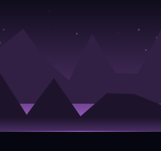
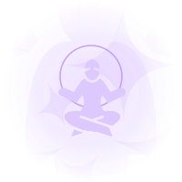
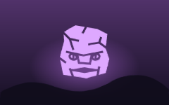
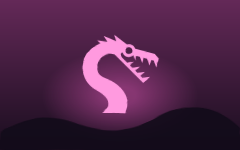
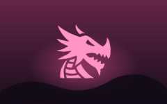

Three directions for the art of 九境.
Nothing here is wired into the game. Every drawing on this page is generated by
tools/artprops.ts from the game's own tables and its own icons, so a
proposal can be looked at beside the thing it would replace.
They are not three styles to choose between on taste. They are three amounts, and they stack: A is hours and needs nothing new, B is days and needs nothing new, C is weeks and needs either money or a licence. The honest recommendation is at the bottom.
hours Put a frame around what is already there. The warden seals already prove this works: the same borrowed silhouette, inside a drawn ring in its realm's colour, stops reading as clip art and starts reading as a set. Nothing is redrawn. The frame is generated, so it costs no download and no licence, and it can carry a rank: a plain ring, then an orbit, then spokes, then a corona.


擊days Every screen becomes a place that reads the save. Six drawings in this game already do it: the tower has as many tiers as you have seals, the arena is the beast's own realm. This asks what the other screens would look like if they did the same. A band of the realm's own sky over 狩 the hunt. A cave mouth over 洞天. The tower's silhouette over 塔. All of it is the scenery that already exists, cropped and reused.
狩 Hunt
The bar is the thing a player watches for weeks and it does not move. One CSS animation over the fill, and the qi runs.
prefers-reduced-motion. Nothing may animate the layout.weeks Real pictures for the 45 named creatures, the 9 realms and the 9 heavens. This is the only one of the three that raises the ceiling, and the only one with a real bill. The frames below are generated stand-ins for the treatment, not for the picture: what a painted card would look like in the game's own dark, with the silhouette standing in for the art that is not drawn yet.



Checked on the web for this page. Licences matter more than looks here: the game is going on a store, so anything with a non-commercial clause is out, and anything requiring attribution needs a credits line, which the game already has for game-icons.net.
| What | Licence | Verdict | |
|---|---|---|---|
| game-icons.net4,180 game icons, the set already in use | CC BY 3.0, commercial, credit required | Keep it. It is the largest set built for games and the game already credits its eight authors. The 120 shipped are 3% of it: another 60 would cost nothing. | open |
| The Met Open Access406,000 images, centuries of Chinese ink painting | CC0, no restriction at all | The single best find for C. Real Song and Ming landscape, free, with an API. Backdrops for the nine realms and the nine heavens, out of the actual tradition the game is set in. | open |
| LXGW WenKaia brush-styled CJK typeface | SIL OFL 1.1, commercial, embeddable | Worth trying for 漢字 the characters on the title and the realm names. The game is on Noto Serif SC today, which is correct and a little plain. | open |
| Google Fonts CJKMa Shan Zheng, ZCOOL XiaoWei and the rest | mostly OFL, check the specimen page | One display face for the logo and the realm titles only. Never for body text: a CJK face is megabytes, and the game loads two already. | open |
| itch.io and OpenGameArtthousands of CC0 and CC BY packs | per asset, filter by licence | Mostly pixel art, which is a different game from this one. Worth a search for ink and brush textures rather than for creatures. | open |
| CraftPix free sectionfantasy icon and GUI packs | free section is commercial with credit | Their free GUI frames are usable and their style is warmer than this game. A source for frames if A is ever done by hand rather than generated. | open |
The game has almost none: a few CSS transitions, one clash animation and the aura's breathing. Here is what is worth adding, in order of what a player sees per minute.
| Effect | Where | How |
|---|---|---|
| 氣 The qi running in the bar | Every screen, all day | One CSS gradient sweep over the fill. 6 lines, no script. |
| 階 A rung opening | The moment the climb happens | A ring that expands and fades from the bar. The sound and the flag already exist; this is the picture of it. |
| 擊 The blow landing | Every fight | A white flash on the struck figure plus a 4px shake. Transform and opacity only, so the compositor does it. |
| 落 A drop arriving | Hunting, which is the loop | The rank's colour sweeping once across the new tile. It is the one moment gear is looked at. |
| 塵 Motes in the air | The arena and the secret rooms | Already drawn, and static. Ten of them drifting on a CSS keyframe with different delays costs nothing. |
| 突破 The breakthrough | Nine times a run | The one place a heavy effect is earned. The aura blooming outward and the colour walking to the next realm over a second and a half. |
The icon on the phone today is 打坐 the meditation silhouette from the same borrowed library, on a magenta wash. It is honest and it is not a logo: it says nothing that a hundred other meditation apps do not say, and it has no wordmark.
| Where | What that demands |
|---|---|
| A home screen, 48 pixels | One shape, readable at a glance. Anything with more than three elements turns to mud, and a thin stroke disappears. |
| Google Play, 512 by 512 | PNG, 32 bit, and no transparency. The store icon is a flat square that the store rounds itself. |
| An Android adaptive icon | 108 by 108 dp in two layers, foreground and background, and only the inner 66 dp is guaranteed to survive the mask. Every manufacturer crops a different shape, so the mark has to sit inside that circle with room to spare. |
| Android 13 themed icons | A third layer, monochrome, tinted by the wallpaper. If the mark only works in the cyan to magenta ramp, this is where it falls apart. |
| The game's own dark | Everything in 九境 sits on #080A18. A logo designed on white and
dropped in will glow wrongly. |
The game is nine realms and nine rungs in each. Nine is the shape.
A minimalist app icon for a dark Chinese cultivation game. A single seated meditating figure in clean white silhouette, seen from the front, centred, small. Around it, nine concentric thin rings, perfectly circular, each ring slightly brighter than the last, going from deep cyan (#5FDCFF) at the outside to hot magenta (#FF5FC8) at the inside. Flat vector illustration, no photorealism, no texture, no shadows, no bevels. Background: a very dark navy void (#080A18) with a soft radial glow behind the figure only. Bold, high contrast, readable at very small sizes. Perfectly symmetrical. Generous empty margin all around the artwork. Square 1:1, no text, no letters, no characters.
A 印 seal is what the whole art direction is already reaching for, and a seal is a logo by construction: a shape inside a border, meant to be small.
A minimalist app icon in the style of a traditional Chinese seal stamp, redrawn for a dark sci-fi cultivation game. A thick rounded-square seal border, inside it a single stylised mountain of nine ascending peaks, and one thin vertical line of qi rising from the tallest peak and breaking the top of the border. Drawn in luminous cyan (#5FDCFF) turning to magenta (#FF5FC8) toward the top. Flat vector, thick even strokes, no gradients inside the strokes, no texture, no shadow. Background: near-black navy (#080A18). Strong silhouette, works at 24 pixels, perfectly centred with wide margins. Square 1:1, no text.
The one image the whole game is about: a figure sitting still while something rises off them for ninety days.
App icon for an idle cultivation game. A seated figure in white silhouette at the bottom centre, and rising from it a single vertical stream of light that widens into nine soft horizontal bands, like nine heavens stacked above. The bands run cyan (#5FDCFF) at the bottom through violet to magenta (#FF5FC8) at the top. Flat vector, minimal, no faces, no detail on the figure. Dark navy background (#080A18) with a faint radial glow at the base. Extremely simple, bold, symmetrical, large empty margin. Square 1:1, no text, no lettering.
A horizontal logo lockup for a game called NINEFOLD. On the left, a simple luminous emblem of nine concentric rings around a small seated meditating figure. On the right, the single word NINEFOLD in a wide, geometric, uppercase sans-serif with generous letter spacing, in soft white. Flat vector, dark navy background (#080A18), cyan to magenta accent (#5FDCFF to #FF5FC8). No other text, no tagline, no Chinese characters. Clean, high contrast, plenty of margin. 16:9.
| Step | Why |
|---|---|
| Generate four, pick by squinting | Blur the image until it is 20 pixels wide. Whatever is still recognisable is the logo. Everything else was decoration. |
| Ask for the same thing again, simpler | The single most useful follow-up is same composition, fewer elements, thicker strokes, more empty margin. Image models over-decorate by default and they subtract well when asked. |
| Redraw it as vector | What comes back is a raster picture of a logo. Trace it, or rebuild it from circles and paths: this game draws everything as SVG and the icon should be a file you can recolour, not a JPEG of an idea. |
| Set the 漢字 yourself | 九境 in the game's own face, which is Noto Serif SC today. A brush face like LXGW WenKai under the OFL is worth a look for the title only. |
| Export the four files the platforms want | public/icon-192.png and icon-512.png for the web
manifest, which the game already ships and which the maskable entry already
points at. Then the adaptive pair for the APK, foreground and background, plus
a white-on-transparent monochrome for themed icons. |
| Test it on a busy wallpaper | An adaptive icon gets cropped to a circle on one phone and a squircle on another, and a themed one gets recoloured entirely. If the mark only reads in its own two colours, it is not finished. |